Comprehensive Image Gallery
This gallery serves as a centralized collection of all visualizations, charts, and hardware screenshots generated for the 2D DCT Accelerator project.
1. Visual Reconstruction
Reconstructed Image Output
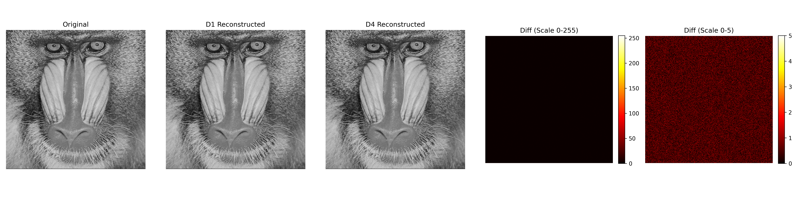
Side-by-side comparison of the original image and the RTL reconstructed output for D1 and D4, alongside heatmaps of the absolute error.2. Error and Fidelity Analysis
Error Histogram
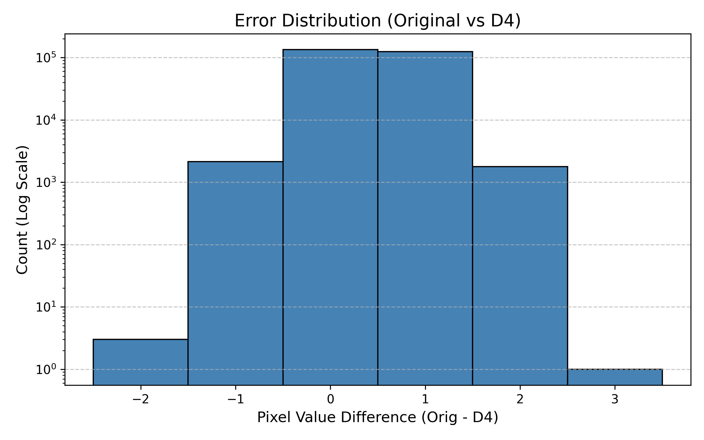
Distribution of pixel-wise errors between the original image and the D4 reconstructed output.2D DCT Energy Concentration
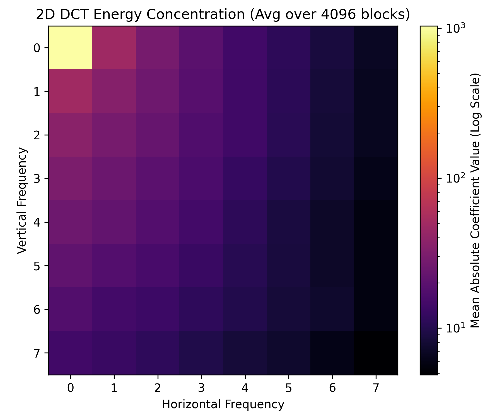
Heatmap showing the concentration of signal energy in the low-frequency DCT coefficients.PSNR vs Quantization Factor
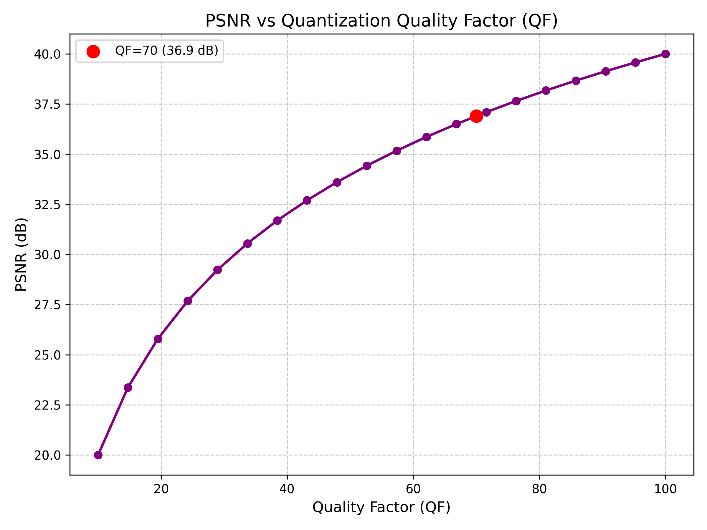
Relationship between the JPEG Quantization Quality Factor and the resulting Peak Signal-to-Noise Ratio (PSNR).3. Hardware & Performance Metrics
Throughput Comparison
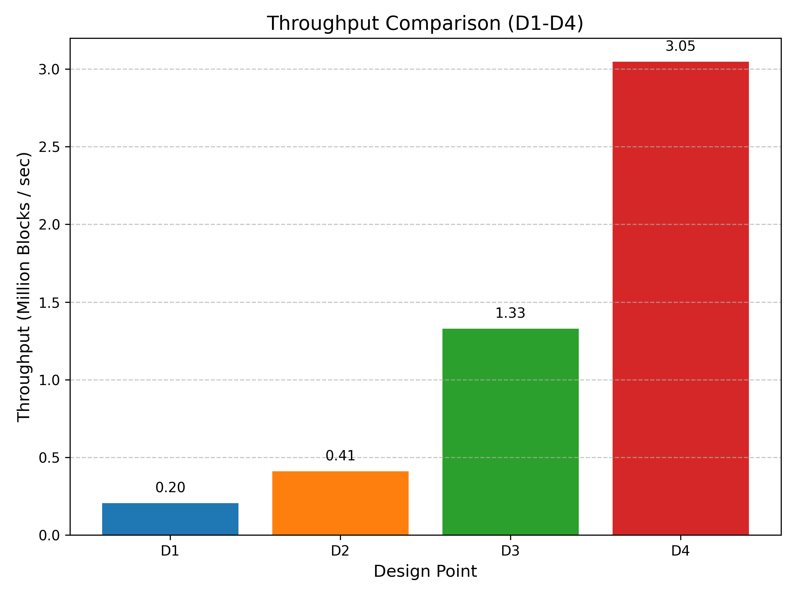
Bar chart comparing the raw throughput (in Million Blocks / sec) across the four design variants.Hardware Resource Breakdown
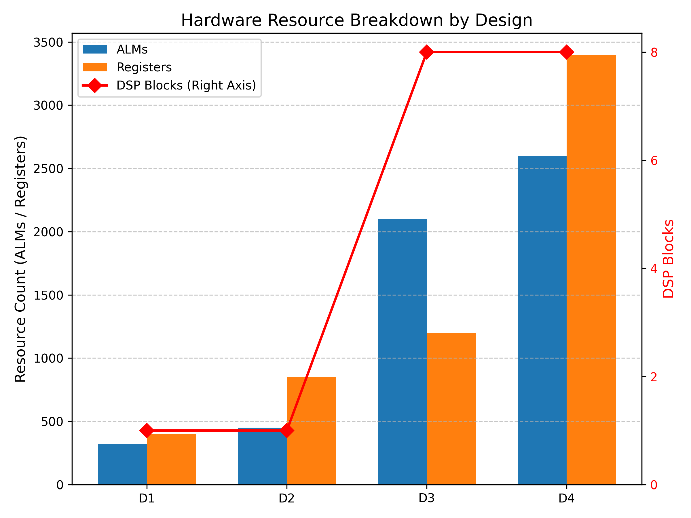
Detailed resource breakdown across the four design variants, highlighting ALMs, Registers, and DSP block usage.Area-Throughput Trade-off
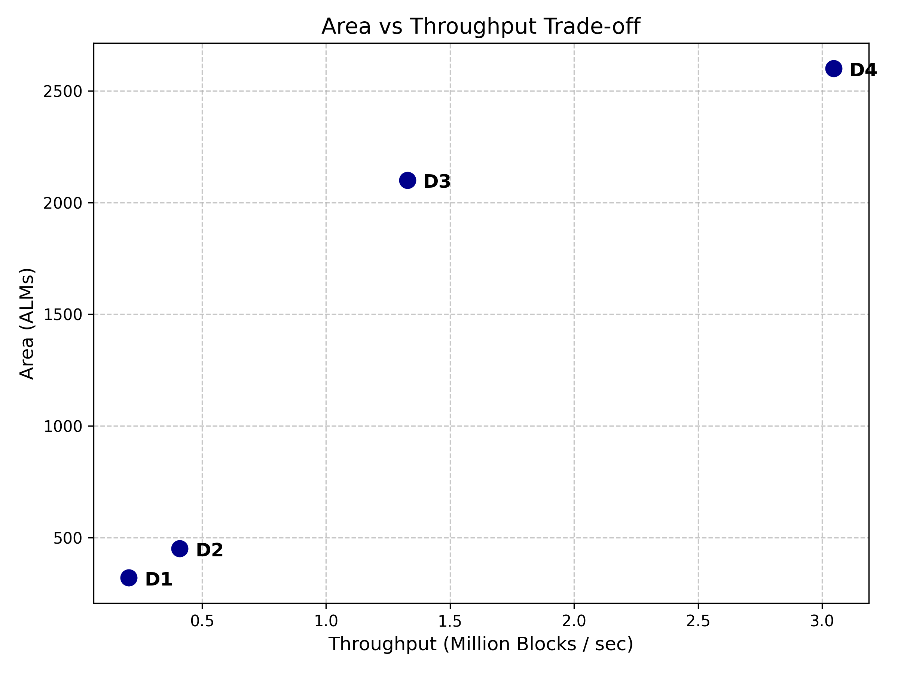
Scatter plot illustrating the Pareto frontier of area vs. throughput for the implemented architectures.Area Efficiency
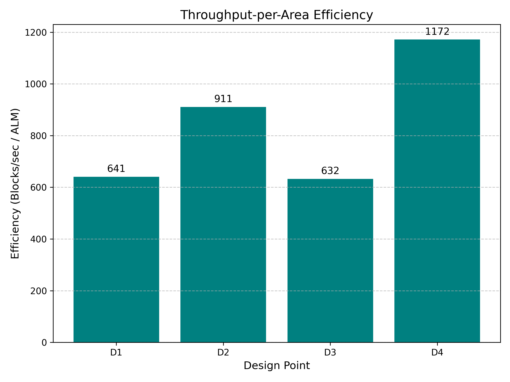
Throughput-per-Area efficiency (Blocks/sec per ALM) showing the relative utilization effectiveness of each design.4. Architecture & Timing
Pipeline Waveform
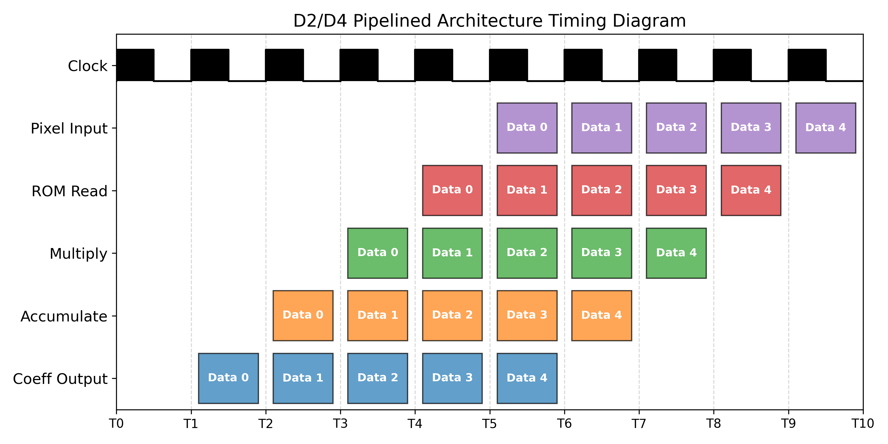
Waveform diagram illustrating the pipeline stages and data flow through the architecture.System Block Diagram (Pending Capture)
 Top-level module hierarchy and system block diagram.
Top-level module hierarchy and system block diagram.
MAC Unit Schematic (Pending Capture)
 Logic schematic for the Multiply-Accumulate (MAC) unit used in the parallel 1D engine.
Logic schematic for the Multiply-Accumulate (MAC) unit used in the parallel 1D engine.
5. RTL Synthesis Artifacts (Pending Capture)
The following images are placeholders for screenshots to be manually captured from the Intel Quartus GUI and placed into the docs/figures/ directory.
D1: Baseline RTL Schematic
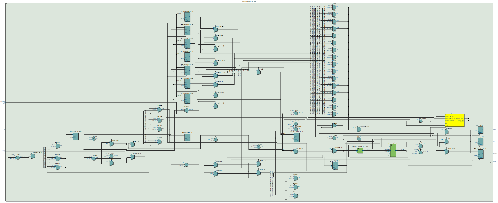
D2: Pipelined RTL Schematic
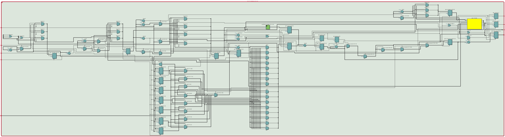
D3: Parallel RTL Schematic
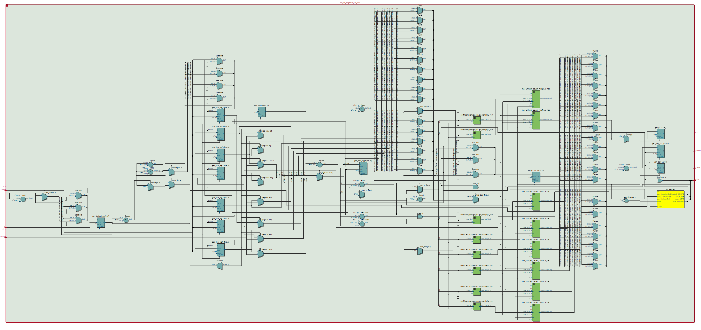
D4: Pipelined + Parallel RTL Schematic
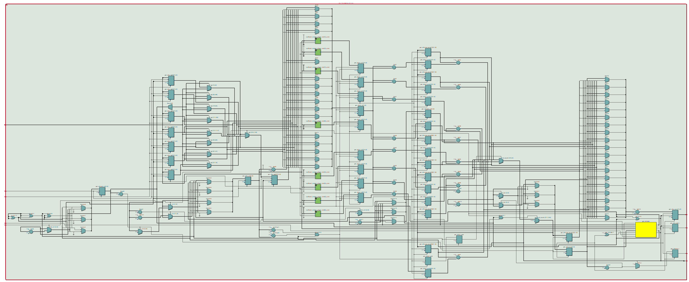
DSP Block Inference (D1/D2)
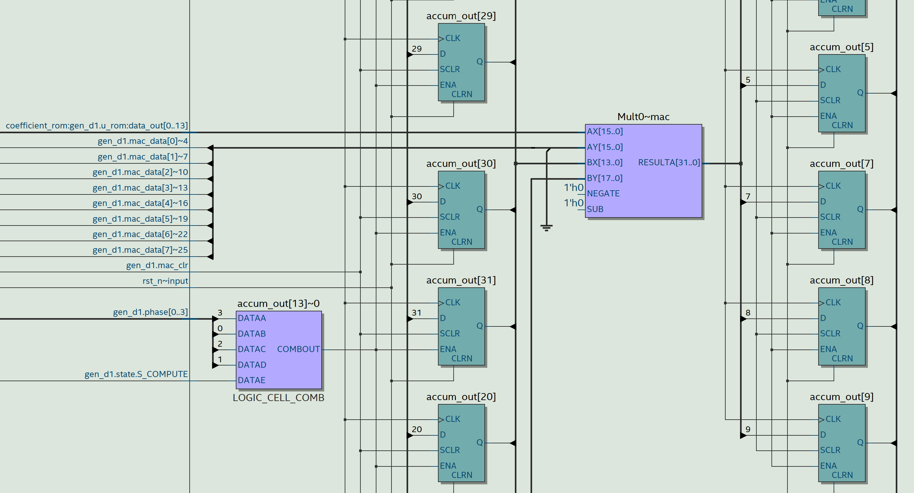
Parallel DSP Block Inference (D3/D4)
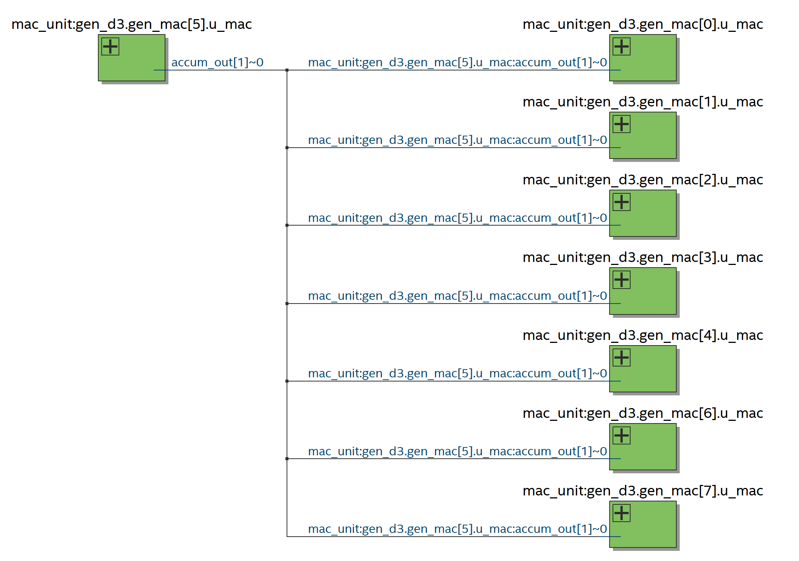